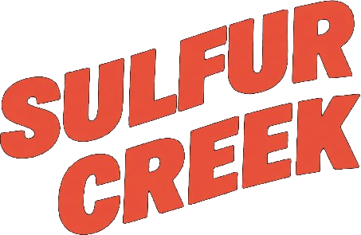
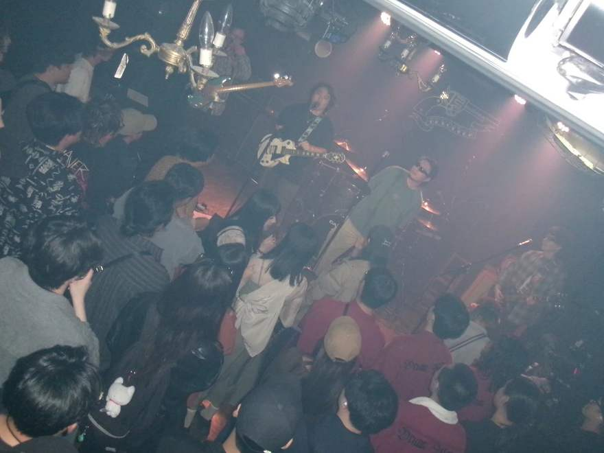
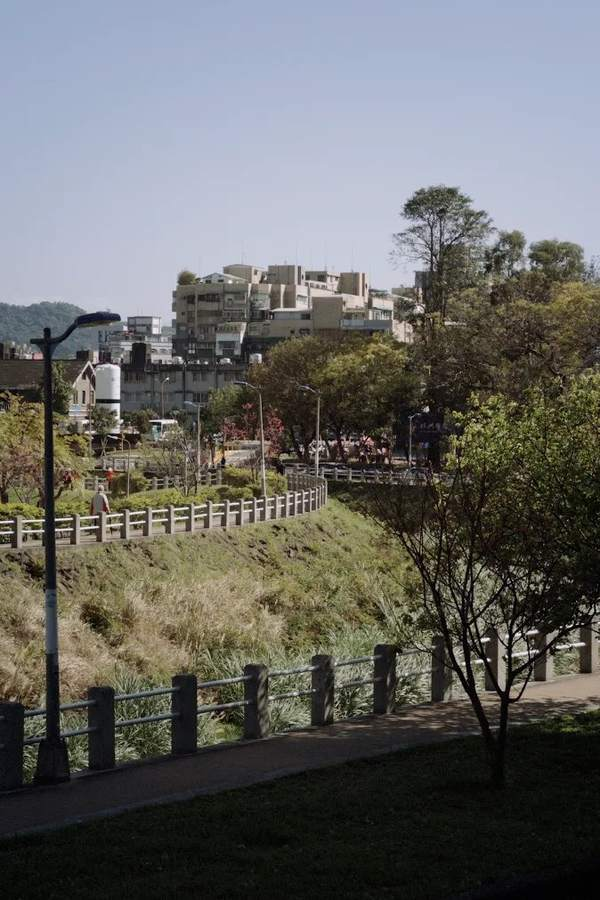
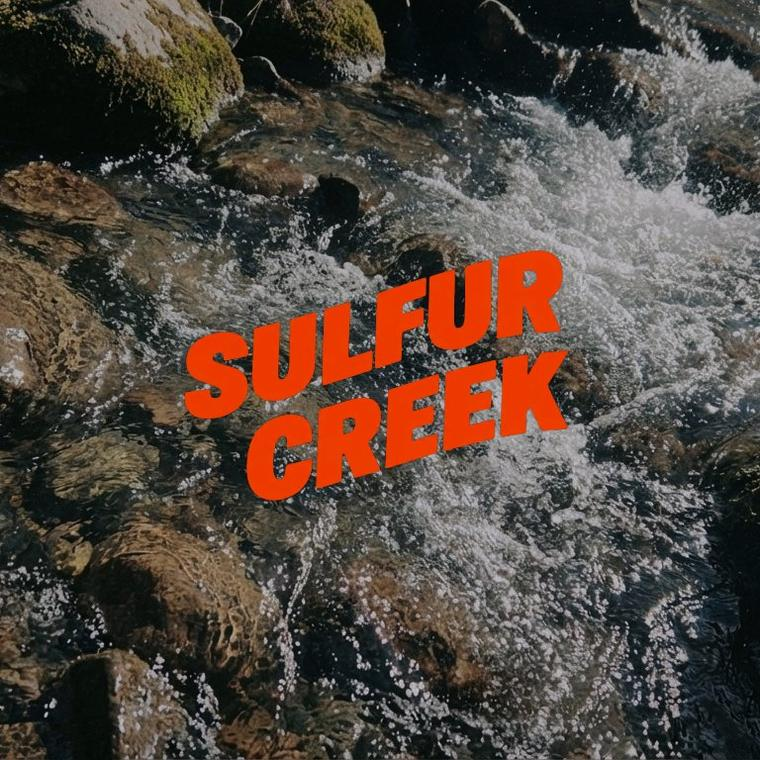
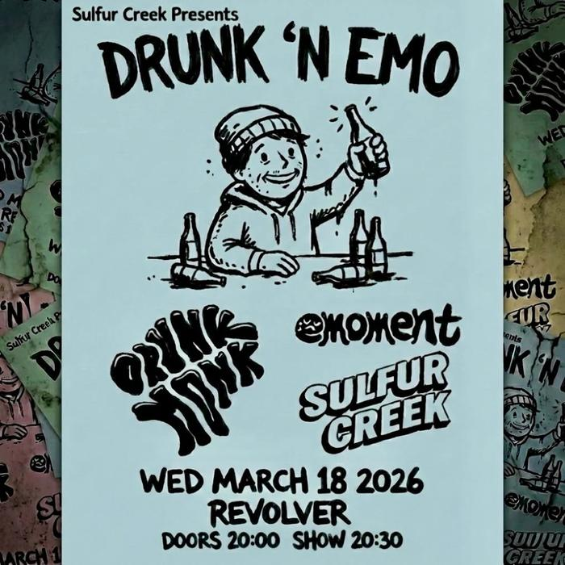
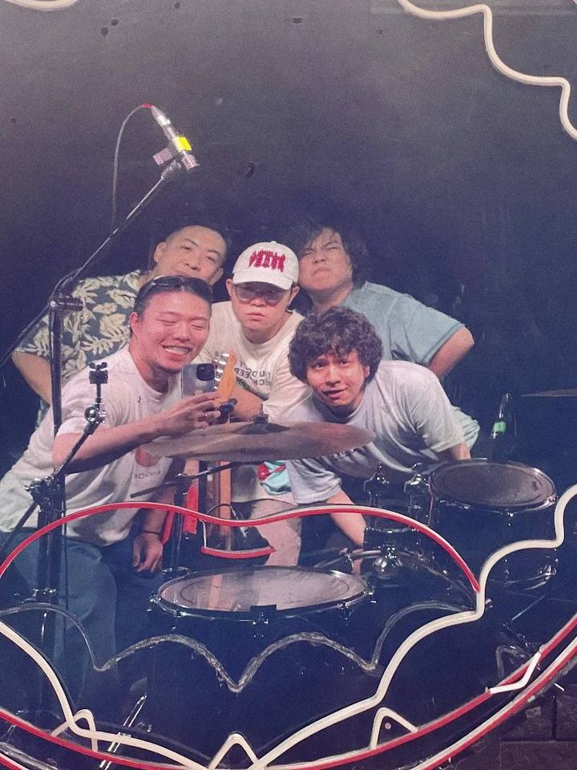

Five friends from the quiet end of Taipei, playing pop punk like it’s the only thing to do after dark.
Loud songs for the long walk home — fast, a little sad, and built for a room full of people who get it.
來自台北邊陲的五人樂團，入夜後唯一的事，是用流行龐克當作解藥對生活修修補補。


Our latest work: Sink or Swim. Hit play.製作中的EP曲目「Sink or Swim」，立即試聽。
We make more sense live. Two from recent shows.節錄在樂悠悠和Revolver的表演側錄

Come hang out. New clips, shows and nonsense live on our Instagram.我們的Instagram粉專
◎ Follow on Instagram@sulfurcreektp ↗